در این بخش می توانید کلیه ی عملیات مرتبط با خرید و فروش را تعریف کنید و برای هر عملیات پارامترهای مورد نیاز را ایجاد کنید ، همچنین از این قسمت می توانید تعیین کنید که هر کاربر به کدام عملیات ها دسترسی داشته باشد. در ادامه به نحوه ی تعریف عملیات و ایجاد پارامترها خواهیم پرداخت، بعد از کلیک بر روی منوی مدیریت عملیات خرید و فروش صفحه ی زیر نمایان می شود :
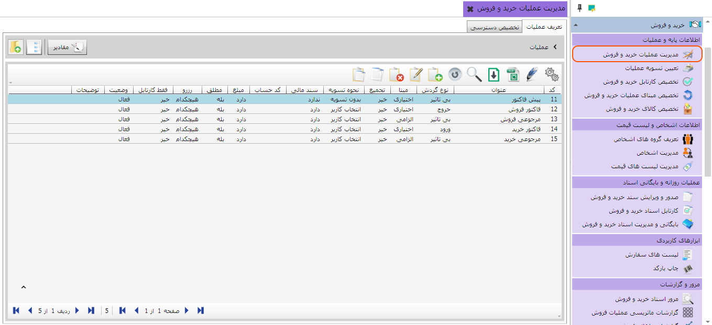همان طور که در شکل بالا ملاحظه می کنید صفحه «مدیریت عملیات خرید و فروش» شامل دو تب تعریف عملیات و تخصیص دسترسی کاربر به عملیات می باشد که در تصویر فوق تب تعریف عملیات انتخاب شده است. این تب شامل جدولی است که عملیات خرید و فروش را همراه با مشخصات و جزئیات آن ها نمایش می دهد. کاربرد این جدول نیز همانند همه جدول های موجود در نرم افزار که قبلا توضیح دادیم می باشد. در ادامه نحوه ایجاد عملیات و پارامتر های آن را شرح خواهیم داد.
برای ایجاد یک عملیات جدید از نوار ابزار بر روی آیکن اضافه کلیک کنید تا فرم ایجاد عملیات نمایان شود:
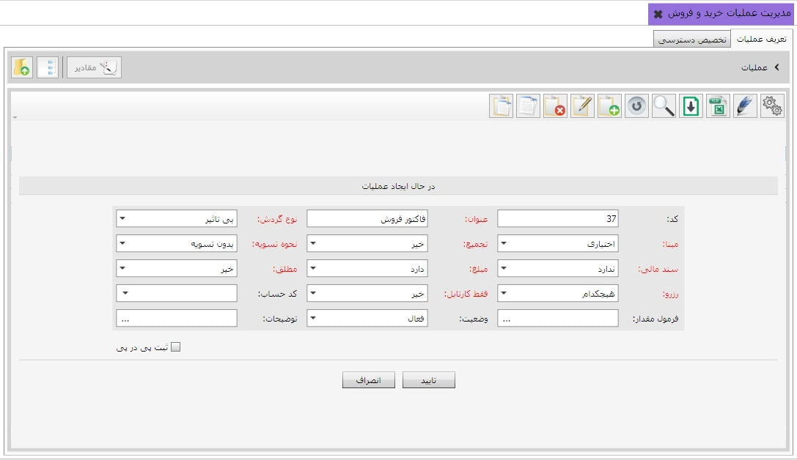کد عملیات به صورت اتوماتیک توسط سیستم تعیین می شود. عنوان عملیاتی را که می خواهید ایجاد کنید در فیلد عنوان تایپ کنید، برای مثال نام عملیات را فاکتور فروش قرار دهید.
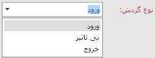در لیست باز شده از فیلد نوع گردش با توجه به اینکه عملیات در حال ایجاد چه تاثیری روی موجودی انبار خواهد گذاشت یک گزینه را انتخاب می کنید در این مثال چون عملیات فروش نوعی خروج کالا از انبار است و ما می خواهیم مستقیما روی موجودی انبار تاثیر بگذارد نوع گردش را خروج قرار می دهیم.
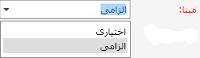در لیست باز شده از فیلد مبنا با توجه به اینکه می خواهید عملیات در حال ایجاد الزاما بر مبنای عملیات دیگری صادر شود یا نه یک گزینه را انتخاب کنید، اگر گزینه الزامی را انتخاب کنید شما در هنگام صدور سند خرید و فروش ملزم به تعیین مبنا هستید ما در این مثال می خواهیم فاکتور فروش الزاما بر مبنای پیش فاکتور صادر شود بنابراین گزینه الزامی را انتخاب می کنیم.
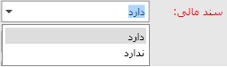اگر بخواهید عملیات مورد نظر شما یک رویداد مالی تلقی شود و در حساب های مالی تاثیر بگذارد یعنی علاوه بر ثبت عملیات خرید و فروش بخواهید برای آن سند حسابداری نیز صادر کنید باید از لیست باز شده گزینه دارد را انتخاب کنید عملیات مورد بیان ما یعنی فاکتور فروش سند مالی دارد برعکس مثلا عملیات پیش فاکتور سند مالی ندارد.
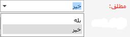زمانی که چند عملیات یک مبنای مشترک داشته باشند اگر فیلد مطلق را برای تمام آن عملیات ها خیر قرار دهید در هنگام صدور سند در قالب آن عملیات ها بدون توجه به اسناد صادر شده قبلی سند جدید صادر می شود ولی اگر برای یکی از آن عملیات ها فیلد مطلق روی گزینه بله قرار گیرد آن گاه هنگام صدور سند تمام اسناد صادر شده قبل که دارای مبنای مشترک با این سند می باشند چک می شوند و فقط تا سقف تعداد کالا هایی که بعد از سند مبنا بدون عملیات باقی ماندند می توان سند صادر کرد. به مثال زیر توجه کنید
برای مثال اگر عملیات خرید مبنای مشترک برای دو عملیات فروش و مرجوعی خرید باشد، شما قادر خواهید بود تنها برای تعدادی از کالاهای خریداری شده که سند مرجوعی خرید برای آن ها صادر نشده سند فروش صادر کنید.
در ادامه ی فرم ایجاد عملیات از فیلد کد حساب معین مربوط به یک سمت سند حسابداری عملیات مورد نظر را از لیست باز شده انتخاب کنید. (همان طور که می دانید هر سند حسابداری دارای یک سمت بدهکار و یک سمت بستانکار است برای اینکه سند حسابداری برای یک سند خرید و فروش صادر شود لازم است که معین هر دو سمت مشخص شود شما می توانید معین یک سمت را در این قسمت مشخص کنید و سمت دیگر در سیستم حسابداری مشخص شود و یا اینکه هر دو سمت سند در سیستم حسابداری تعیین شوند.)
شما می توانید از طریق فیلد فرمول مقدار، برای مقدار عملیات ایجادی فرمولی تعیین کنید که در هنگام صدور سند خرید و فروش بر حسب آن فرمول، مقدار عملیات محاسبه گردد. با کلیک بر علامت سه نقطه ... داخل فیلد پنجره ویرایش فرمول ظاهر می شوند که می توانید داخل آن فرمول را وارد کنید.
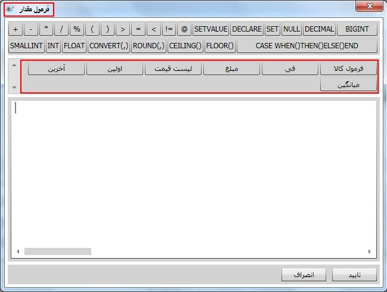در ادامه، فیلد وضعیت به صورت پیش فرض فعال می باشد چنانچه در هر زمان آن را به حالت غیر فعال تغییر دهید دیگر نمی توانید بر اساس آن عملیات، سند خرید و فروش صادر کنید و عملیات غیر فعال در فرم صدور سند خرید و فروش نمایش داده نمی شود.
و در نهایت اگر توضیحی لازم بود در فیلد توضیحات وارد کنید و بر روی دکمه تایید کلیک کنید تا عملیات جدید ایجاد شود.
بعد از ایجاد یک عملیات شما می توانید در صورت نیاز برای آن عملیات پارامتر نیز تعریف کنید. برای مشاهده پارامترهای یک عملیات از لیست درختی سمت راست صفحه «مدیریت عملیات خرید و فروش»، عملیات مورد نظر را انتخاب کنید و یا در سمت چپ روی عملیات مورد نظر دبل کلیک کنید، اگر عملیات انتخابی دارای پارامتر باشد آنها را مشاهده خواهید کرد.
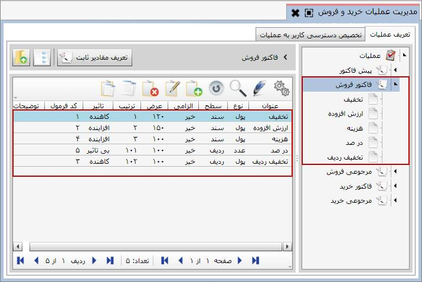برای اضافه کردن یک پارامتر جدید در لیست پارامتر ها روی گزینه اضافه کلیک کنید تا فرم ایجاد پارامتر نشان داده شود.
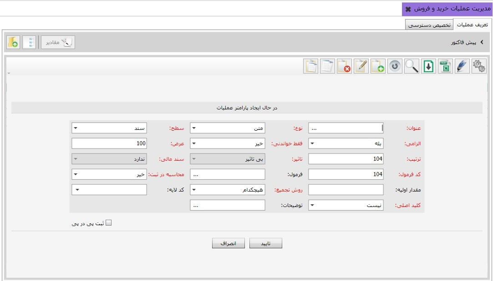فیلد کد غیر فعال است و سیستم به صورت اتوماتیک پارامترها را کد بندی می کند. عنوان پارامتر را در فیلد عنوان تایپ کنید، در شکل بالا پارامتر تخفیف در حال ایجاد است. در فیلد نوع، نوع پارامتر مورد نظر را وارد نمایید که در اینجا پارامتر تخفیف از نوع پول است.
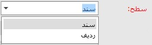پارامتر عملیات را می توانید در سطح سند تعریف کنید و یا در سطح ردیف، اگر پارامتر را در سطح سند قرار دهید پارامتر ایجادی روی کل سند تاثیر می گذارد و در انتهای فرم صدور سند خرید و فروش به صورت یک فیلد از شما سوال می شود. اگر پارامتر عملیات در سطح ردیف ایجاد شود به صورت یک ستون در فرم صدور سند خرید و فروش نمایش داده می شود و شما باید مقدار آن پارامتر را برای هر ردیف سند جداگانه مشخص کنید.
اگر فیلد الزامی را روی بله تنظیم کنید در هنگام صدور سند خرید و فروش الزام به تعیین مقدار پارامتر دارید و در صورت عدم تعیین آن سند خرید و فروش ثبت نمی شود. فیلد عرض، عرض ستون پارامتر در سطح ردیف و یا عرض فیلد پارامتر در سطح سند را تعیین می کند. در فیلد ترتیب پارامتر های یک عملیات به ترتیب ایجاد شماره می گیرند و شما می توانید توسط آن مکان فیلد پارامتر را در سند تعیین کنید.
فقط خواندنی در صورتی که نیاز باشد پارامتری برای عملیات تعریف شود که مقدار ثابتی را هنگام صدور سند نمایش دهد باید فیلد فقط خواندنی را بله بگذارید. می توانید مقدار این فیلد را هنگامی که برای کالا فرمول تعریف می کنید مشخص نمائید.
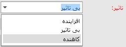اگر در لیست باز شده از فیلد نوع ، گزینه پول را انتخاب کنیم فیلد تاثیر فعال می شود و بسته به تاثیری که پارامتر ایجادی روی مبلغ سند خواهد گذاشت باید یکی از سه گزینه موجود در لیست را انتخاب نمایید. در اینجا چون تخفیف تاثیر منفی روی مبلغ دارد گزینه کاهنده را انتخاب کرده ایم.
کد فرمول به صورت پیش فرض برابر با همان شماره ترتیب می باشد و در هنگام تعریف فرمول ها از این شماره استفاده می شود.
شما می توانید داخل فیلد فرمول، فرمولی برای محاسبه پارامتر وارد کنید، با کلیک بر علامت سه نقطه ... داخل فیلد فرمول پنجره ویرایش فرمول ظاهر می شود و می توانید فرمول را وارد کنید. (در فرم صدور سند خرید و فروش مقدار پارامتر عملیات را می توان به صورت دستی وارد کرد و یا با فرمولی که در این قسمت وارد می کنید مقدار پارامتر به صورت اتوماتیک محاسبه شود.)
 برای ایجاد فرمول
محاسبه ی مقدار یک عملیات خرید و فروش، شما می توانید از فی و مبلغ به عنوان متغیرهای فرمول
استفاده کنید
(شکل صفحه 7) و در فرمول محاسبه پارامتر عملیات در سطح ردیف می توانید از فی، مبلغ، مقدار و سایر
پارامتر های موجود
در سطح ردیف این عملیات به عنوان متغیرهای فرمولتان استفاده کنید. همچنین در فرمول محاسبه پارامتر
عملیات در
سطح سند می توانید از جمع فی، جمع مبلغ، جمع مقدار، جمع پارامتر های در سطح ردیف این عملیات و بقیه
پارامتر های
در سطح سند این عملیات استفاده کنید. (قابل ذکر است که تمامی پارامتر های قابل استفاده در قسمت بالای
پنجره ویرایش
فرمول نشان داده می شود و شما کافیست آنها را انتخاب کنید.) شکل های زیر به درک بهتر مطلب کمک خواهند
کرد.
برای ایجاد فرمول
محاسبه ی مقدار یک عملیات خرید و فروش، شما می توانید از فی و مبلغ به عنوان متغیرهای فرمول
استفاده کنید
(شکل صفحه 7) و در فرمول محاسبه پارامتر عملیات در سطح ردیف می توانید از فی، مبلغ، مقدار و سایر
پارامتر های موجود
در سطح ردیف این عملیات به عنوان متغیرهای فرمولتان استفاده کنید. همچنین در فرمول محاسبه پارامتر
عملیات در
سطح سند می توانید از جمع فی، جمع مبلغ، جمع مقدار، جمع پارامتر های در سطح ردیف این عملیات و بقیه
پارامتر های
در سطح سند این عملیات استفاده کنید. (قابل ذکر است که تمامی پارامتر های قابل استفاده در قسمت بالای
پنجره ویرایش
فرمول نشان داده می شود و شما کافیست آنها را انتخاب کنید.) شکل های زیر به درک بهتر مطلب کمک خواهند
کرد.

شما می توانید هر پارامتری که ایجاد می کنید را، چه در سطح ردیف و چه در سطح سند، به یکی از لایه های اشخاص، صندوق ها، حساب های بانکی و ... مرتبط کنید. با این کار در فرم صدور سند خرید و فروش، هنگام مقداردهی پارامتر مورد نظر می توانید لیست تفصیل هایی که به لایه انتخاب شده در این قسمت مرتبط شده اند را مشاهده کرده و یکی را انتخاب نمایید.
و در نهایت با تایپ کردن توضیحات لازم در فیلد توضیحات و تایید کردن فرم ایجاد پارامتر عملیات، پارامتر جدید ثبت می شود.
شکل زیر ایجاد پارامتر در سطح ردیف را نمایش می دهد.
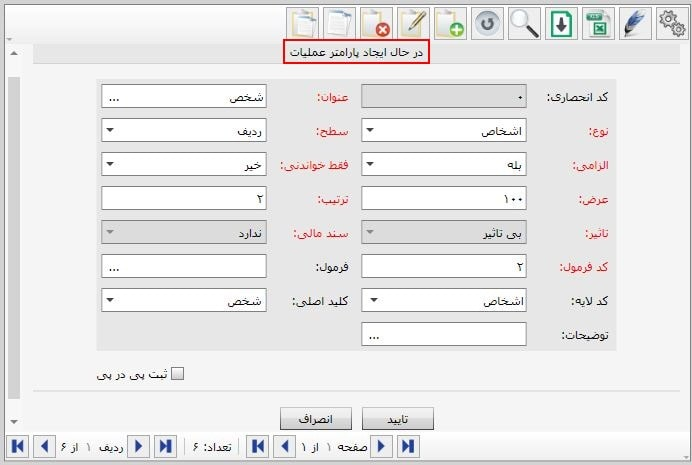
پس از ایجاد
پارمتر مورد نظر در صورتی که نوع پارامترشخص و یا انبار بود باید گروه های اشخاص تعریف شده در منوی
تعریف اطلاعات اشخاص با استفاده از دکمه مفادیر
 به پارامتر مورد نظر تخصیص دهیم شکل های زیر این مراحل را نشان می دهد.
به پارامتر مورد نظر تخصیص دهیم شکل های زیر این مراحل را نشان می دهد.
گروه های مورد نظر را از قسمت موارد انتخاب نشده به قسمت موارد انتخاب شده انتقال دهید.

 برا ی مشاهده
گروه های اشخاص در قسمت موارد انتخاب نشده ابتدا باید گروه های مورد نظر را در منوی تعریف گرو های
اشخاص، تعریف نمائید.
برا ی مشاهده
گروه های اشخاص در قسمت موارد انتخاب نشده ابتدا باید گروه های مورد نظر را در منوی تعریف گرو های
اشخاص، تعریف نمائید.
برای پیش برد سریع تر و راحت تر تعریف عملیات و پارامترها، مجموعه ای از عملیات و پارامترهای آن ها به صورت از پیش تعریف شده در نرم افزار قرار داده شده است که می توانید آن ها را خواندن از فایل کنید. همچنین می توانید به مجموعه عملیات آماده، عملیات و پارامتر های مورد نظرتان را اضافه کرده و مجددا در فایل ذخیره کنید.
برای این کار از آخرین منوی اتوماسیون خرید و فروش، روی «صفحه تنظیمات خرید و فروش» کلیک کنید تا صفحه مربوطه باز شود.
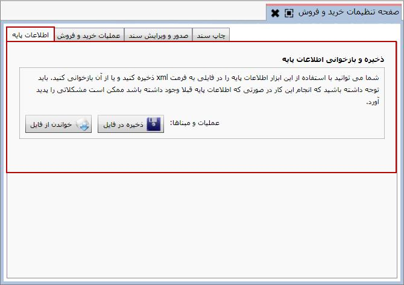در صفحه شکل قبل در تب « اطلاعات پایه» روی گزینه 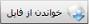 کلیک کنید تا پنجره زیر باز شود
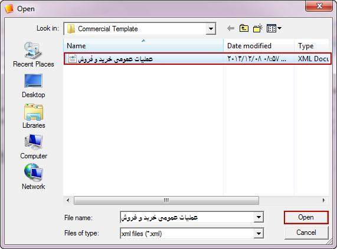از پیجره فوق فایل «عملیات عمومی خرید و فروش» را انتخاب کرده و روی Open کلیک کنید تا عملیات مورد نظر در صفحه «مدیریت عملیات خرید و فروش» قرار گیرد.
پس از ایجاد عملیات و پارامترهای مورد نیاز، باید دسترسی کاربران به این عملیات را مشخص کنیم برای این کار از صفحه مدیریت عملیات تب «تخصیص دسترسی» را انتخاب کنید
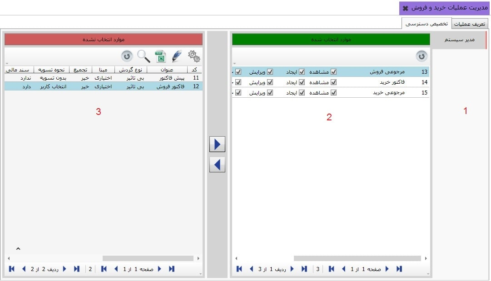همان طور که ملاحظه می کنید شکل بالا دارای سه ناحیه می باشد، در قسمت 1 لیست نام کاربران را مشاهده می کنید که از میان آنها کاربر مدیرسیستم در حالت انتخاب قرار دارد. قسمت 2 شامل عملیاتی است که به این کاربر تخصیص داده شده است و قسمت 3 مابقی عملیات ها را شامل می شود. برای تخصیص یک عملیات به یک کاربر کافی است نام کاربر را انتخاب کرده و آن عملیات را از ناحیه 3 به ناحیه 2 بفرستید.(عملیات انتقال با دو فلش انجام می شود.)
همچنین شما می توانید دسترسی هر کاربر را به هر یک از فرآیندهای مشاهده، ایجاد، ویرایش، حذف، تایید و ارسال به تفکیک هر عملیات تعیین کنید.
در فرم صدور سند خرید و فروش هرکاربر فقط با عملیات هایی می تواند سند صادر کند که دسترسی به آن عملیات ها را داشته باشد، در شکل فوق مدیر سیستم در سیستم خرید و فروش می تواند برای کلیه عملیات تعریف شده سند صادر کند.